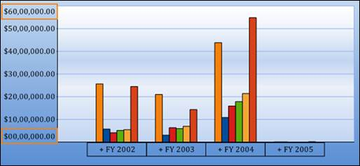
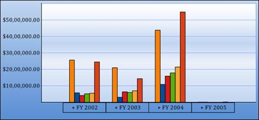

In order to show the edge labels clearly, set the EdgeLabelsDrawingMode property to Shift as shown in the following code snippets:
|
[C#] this.olapChart1.PrimaryXAxis.EdgeLabelsDrawingMode = ChartAxisEdgeLabelsDrawingMode.Shift; this.olapChart1.PrimaryYAxis.EdgeLabelsDrawingMode = ChartAxisEdgeLabelsDrawingMode.Shift; |
|
[VB] Me.olapChart1.PrimaryXAxis.EdgeLabelsDrawingMode = ChartAxisEdgeLabelsDrawingMode.Shift Me.olapChart1.PrimaryYAxis.EdgeLabelsDrawingMode = ChartAxisEdgeLabelsDrawingMode.Shift |

Figure 68: Showing Edge Labels
In order to show the edge labels clearly, set the HidePartialLabels property to true as shown in the following code snippets:
|
[C#] this.olapChart1.ChartArea.HidePartialLabels = true; |
|
[VB] Me.olapChart1.ChartArea.HidePartialLabels = True |

Figure 69: Hiding Edge Labels